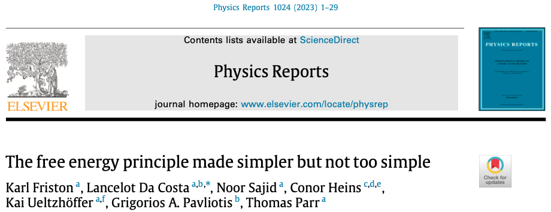

8 simpler but not too simple
The following are some notes taken while trying to understand the paper:
The free energy principle made simpler but not too simple
by Karl Friston, Lancelot Da Costa, Noor Sajid, Conor Heins, Kai Ueltzhöffer, Grigorios A. Pavliotis, Thomas Parr

Download the paper here.
8.1 Systems, states and fluctuations
8.1.1 equation 1
\begin{align*} \dot{x}(\tau) &= f(x) + \omega(\tau) \tag{1a} \\ p(\omega\mid x)&= \mathcal{N}(\omega; 0,2\Gamma) \Rightarrow p(\dot{x}\mid x) = \mathcal{N}(\dot{x};f, 2\Gamma) \tag{1b} \\ p(x) &= ? \tag{1c} \end{align*}
Explanation:
Equation (1a) is a Langevin equation, that is, it’s a mathematical formula used to describe how a system changes over time when it experiences both regular forces and random, fluctuating forces.
- x. The vector of state variables, stacked as a column vector.
- \tau. Specific time at which something is evaluated
- f(x). The (deterministic) flow, can be pictured as a vector field in the phase space.
- \omega. Random fluctuations
- p(\omega\mid x). The probability density of a given random fluctuation, given that we know the value of the state vector.
- \mathcal{N}(\omega; 0,2\Gamma). The probability density above turns out not to depend on x, because the authors wanted so, but they could have chosen otherwise. In any case, the probability density looks like a gaussian (normal) distribution (over the variable \omega), whose mean is zero and covariance is 2\Gamma.
- p(\dot{x}\mid x) = \mathcal{N}(\dot{x};f, 2\Gamma). If this is not obvious from what came before (it wasn’t to me!), consider the following. If \omega is a random variable, we are free to define a new random variable y=f+\omega: we just shifted \omega by f, and gave it a name. What will be the mean and covariance of this new random variable y? \begin{align*} \mathbb{E}[y] &= \mathbb{E}[f + \omega] = f + \mathbb{E}[\omega] = f + 0 = f \\ \text{Cov}(y) &= \text{Cov}(f+\omega) = \text{Cov}(\omega) = 2\Gamma \end{align*} That’s it! The only thing now is to realize that the new random variable y is really \dot{x}. One could wonder why is it ok to treat f(x) as it were a constant when we calculated the mean and covariance. This is kosher because p(\dot{x}\mid x) is conditioning on x, so f(x) is simply a fixed vector.
- p(x) = ? The authors are asking: what can we say about the density over states? The absence of a time argument here is deliberate, it’s a first hint that the density we’ll eventually care about is a steady-state one.
8.1.2 equation 2
\dot{p}(x, \tau) = \nabla \cdot (\Gamma \nabla - f(x))p(x,\tau) \tag{2}
This is the Fokker-Planck equation associated with the Langevin equation (1a). This equation descibes how the probability density evolves over time.
Let’s try to justify how the Fokker-Planck equation originates. Think of p(x,\tau) as a “fluid” of probability mass flowing through state space as time passes. The fluid-like behavior comes from the fact that the total probability is conserved (it is 1), just like a fluid that is able to move from here to there, but not disappear. We can describe the probability density with a continuity equation, just like we usually do for fluids, masses, charges, etc:
\dot{p}(x,\tau) = -\nabla \cdot J(x,\tau)
In the continuity equation above, J is a probability current. This current can be split into two components:
- Advection: the deterministic flow f(x) carries the probability mass along with it, just like a water current carries leaves floating on the water surface. The drift of p will be higher where the p density is higher, and lower where p is more sparse. This gives J_{\text{drift}}=f(x)p(x,\tau).
- Diffusion: the random fluctuations \omega(\tau) spread probability mass out, just like dye diffusing in still water. Fick’s law says that the diffusive flux is proportional to the (negative) gradient of concentration. Picture in your mind a cloud of perfume hanging in the air. The gradient of perfume concentration points to the center of the cloud, in the direction of increasing concentration. Fick’s law says that the diffusive flux points in the opposite direction of the gradient (in this example, outward), and that makes sense. The higher the concentration difference between two points, the larger the flux, and that also makes sense. Of course, if there is no concentration difference between two points, then there won’t be any flux. This gives the following equation: J_{\text{diff}}=-\Gamma\nabla p(x,\tau). The \Gamma in this equation is the very same \Gamma from the random-fluctuations covariance in equation (1). It plays the role of a diffusion coefficient: the higher the value of \Gamma, the faster the diffusive flux will be. The assumption that random fluctuations are state-independent makes the \Gamma be to the left of the \nabla operator; if they weren’t, then we would have instead \nabla (\Gamma p(x,\tau)).
Putting these two contributions together, we have
\begin{align*} J(x,\tau) &= J_{\text{drift}} + J_{\text{diff}} \\ & = f(x)p(x,\tau) -\Gamma\nabla p(x,\tau) \end{align*}
Finally, we can plug J into the continuity equation:
\begin{align*} \dot{p}(x,\tau) &= -\nabla \cdot J(x,\tau) \\ &= -\nabla \cdot (f(x)p(x,\tau) -\Gamma\nabla p(x,\tau)) \\ &= \nabla \cdot (\Gamma \nabla - f(x))p(x,\tau) \end{align*}
Note that in the last line we factor out p and rearranged the terms a bit.
Let’s do a sanity check:
- If \Gamma=0 (i.e., there is no noise in the system), the Fokker-Planck equation becomes a deterministic drift: \dot{p} = -\nabla \cdot f(x)p.
- If f(x)=0 (there is no flow), the F-P equation becomes simply \dot{p}=\nabla \cdot(\Gamma\nabla p), which is the anisotropic heat equation. We would get the isotropic heat equation (\dot{p}=\Gamma\nabla^2 p if the covariance matrix \Gamma was a scalar multiple of the identity matrix (in general it isn’t).
Note: One can perform a Kramers-Moyal expansion, which is a more rigorous way of deriving the Fokker-Planck equation. The final form we got here is dependent on the assumption that the noise is gaussian. If it weren’t, we would get infinitely many extra terms in the F-P equation.
8.1.3 equation 3
\begin{align*} \mathcal{A}(x[\tau]) &= - \ln p(x[\tau] \mid x_0) \tag{3a} \\ &= \frac{\tau}{2} \ln \left| (4\pi)^n \Gamma\right| + \int_{0}^\tau dt \mathcal{L}(x,\dot{x}) \tag{3b} \\ \mathcal{L}(x,\dot{x}) &= \frac{1}{2}\left[ (\dot{x}-f)\cdot \frac{1}{2\Gamma}(\dot{x}-f) + \nabla\cdot f \right] \tag{3c} \end{align*}
Explanations:
- \mathcal{A}. This is the action that we learn about in classical mechanics. Nature supposedly follows whatever path that makes the action extreme (either a maximum or a minimum).
- x[\tau]. Attention! The square brackets denote a path, these are all the values that x assumed between time zero and \tau. This is not the same as x(\tau), which is just x evaluated at a single instant in time.
- x_0. The system’s starting point, x(\tau=0)=x_0.
Before we continue explaining the various symbols in the equation, let’s talk about the central question being asked here: Given that the system started at x_0, what is the probability of the entire trajectory x[\tau]? Let’s derive together expression (3a).
step 1: discretize
Let’s divide the time interval between 0 and \tau into N thin slices of width \Delta t. The path is then just a sequence of states x_0,x_1,x_2,\ldots x_N. The continuous path x[\tau] is the limit of this sequence as \Delta t \to 0.
step 2: chain rule
For any joint distribution, the chain rule of probability lets us factor it into a product of conditionals, each depending on the full history so far:
\begin{align*} p(x_1,\ldots,x_N \mid x_0) &= p(x_1 \mid x_0)p(x_2\mid x_1,x_0)p(x_3\mid x_2,x_2,x_0)\cdots \\ &= \prod_{k=0}^{N-1} p(x_{k+1} \mid x_k,x_{k-1},\ldots,x_0) \end{align*}
step 3: Markov property
In the equation \dot{x}=f(x)+\omega(\tau), \omega is memoryless, that is, its value at one instant in time tells us nothing about its value at another instant. All the past history relevant to what will happen to x in the next time step is fully summarized in the current state x_k; the previous states x_{k-1},\ldots,x_0 add nothing further. This property collapses each conditional above to depend only on the most recent state:
p(x_{k+1} \mid x_k,\ldots,x_0) = p(x_{k+1}|x_{k}) \\ \Longrightarrow \\ p(x[\tau] \mid x_0) \approx \prod_{k=0}^{N-1} p(x_{k+1}\mid x_k)
Every time step is conditionally independent of the past, given the present
step 4: swap x_{k+1} for \dot{x}_k
We don’t have a ready-made formula for p(x_{k+1}\mid x_k), but we do have one for p(\dot{x}_k\mid x_k). This is Equation (1). Since
x_{k+1} = x_k + \Delta t \cdot \dot{x}_k
is a deterministic, invertible map given that we know x_k (a scaling by \Delta t, then a shift by x_k), the probability densities for x_{k+1} and \dot{x}_k carry identical information, differing only by the scaling’s Jacobian. Remember that the Jacobian is simply the conversion rule from one coordinate system to another. Let’s take \dot{x}_k as the “original” coordinates, and x_{k+1} as the derived coordinates, just like we see in the equation above. In our example, this Jacobian is trivially simple, since each component i in the vector x_{k+1} is associated only with the corresponding component i of the vector \dot{x}_k, so the Jacobian is simply (\Delta t)I, where I is the identity. Think about it. If, for instance, \Delta t = 1/10, then, according to the equation above, the coordinate \dot{x}_k will be squished by a factor of 10 to give the coordinate x_{k+1}. Ultimately, we’re not interested in the coordinates themselves, but in the probability densities. Imagine a multi-dimensional cube in the \dot{x}_k coordinates. If we multiply each of these n coordinates by a factor of (\Delta t), we get a new cube in the x_{k+1} coordinates, whose volume will be (\Delta t)^n as much as the original. This is precisely the determinant of the Jacobian. Since probability mass must conserve in this affine transformation (scaling plus a shift), we conclude that the probability density must get multiplied by the reciprocal of the determinant of the Jacobian, that is, by (1/\Delta t)^n. In other words, we’ve found out that
p(x_{k+1}\mid x_k) = \frac{1}{(\Delta t)^n} p(\dot{x}_k\mid x_k).
step 5: assemble the product
We plug the last result above in the expression for p(x[\tau] \mid x_0) from Step 3: \begin{align*} p(x[\tau] \mid x_0) &\approx \prod_{k=0}^{N-1} p(x_{k+1}\mid x_k) \\ &= \prod_{k=0}^{N-1} \frac{1}{(\Delta t)^n} p(\dot{x}_k\mid x_k) \\ &= \frac{1}{(\Delta t)^{nN}}\prod_{k=0}^{N-1} p(\dot{x}_k\mid x_k) \end{align*}
step 6: take the negative logarithm
Now the product becomes a sum:
- \ln p(x[\tau] \mid x_0) \approx \underbrace{nN \ln(\Delta t)}_{constant} + \sum_{k=0}^{N-1}\left[ -\ln p(\dot{x}_k\mid x_k) \right]
The first term in the right-hand side does not depend on the path. This is the “additive constant” the paper says it will omit throughout.
step 7: continuum limit
As \Delta t \to 0, a Riemann sum over tiny time-slices becomes an integral over continuous time:
\sum_{k=0}^{N-1}\left[ -\ln p(\dot{x}_k\mid x_k) \right] \longrightarrow \underbrace{ \int_0^{\tau} dt \left[ -\ln \underbrace{p(\dot{x}(t)\mid x(t))}_{\text{surprisal at an instant}} \right]}_{\text{surprisal of the whole path}}
Therefore, we’ve fully justified equation (3a) and its interpretation:
\mathcal{A}(x[\tau]) = -\ln p(x[\tau]\mid x_0) = \text{surprisal of the whole path}
gaussian noise
Now we can continue to equations (3b) and (3c). We recall from equation (1) that
p(\dot{x}\mid x) = \mathcal{N}(\dot{x};f, 2\Gamma)
For an n-dimensional random vector Y with mean \mu and covariance matrix \Sigma, the gaussian density is
\mathcal{N}(Y;\mu,\Sigma) = \frac{1}{\sqrt{(2\pi)^n |\Sigma|}} \exp\left( -\frac{1}{2}(Y-\mu)^T\Sigma^{-1}(Y-\mu) \right)
The part that comes before the exponent is not special in any way. This is simply a normalizing constant that ensures that when we integrate the probability density over all its variables we get a total probability of one.
The part that comes inside the exponent is a quadratic form. This measures how far Y is from the mean \mu, but the “distance” is warped by the inverse matrix of \Sigma
8.1.4 equation 4
\begin{align*} \bm{x}[\tau] &= \arg \min_{x[\tau]} \mathcal{A}(x[\tau]) \tag{4a} \\ &\Leftrightarrow \delta_x \mathcal{A}(\bm{x}[\tau]) = 0 \tag{4b} \\ &\Leftrightarrow \dot{\bm{x}}(\tau) = f(x) \tag{4c} \end{align*}
Show the code
# numerically compute hessian element f_xx, f_xy, f_yx, f_yy
eps = 1e-5
f_xx = (f(X+eps, Y) - 2*f(X, Y) + f(X-eps, Y)) / (eps**2)
f_yy = (f(X, Y+eps) - 2*f(X, Y) + f(X, Y-eps)) / (eps**2)
f_xy = (f(X+eps, Y+eps) - f(X+eps, Y-eps) - f(X-eps, Y+eps) + f(X-eps, Y-eps)) / (4*eps**2)
f_yx = f_xy # mixed partials are equal--------------------------------------------------------------------------- TypeError Traceback (most recent call last) Cell In[8], line 2 1 # numerically compute hessian element f_xx, f_xy, f_yx, f_yy ----> 2 hessian_elements = hessian(f, X, Y) 3 f_xx = hessian_elements[0, 0] 4 f_xy = hessian_elements[0, 1] 5 f_yx = hessian_elements[1, 0] TypeError: hessian() takes 2 positional arguments but 3 were given